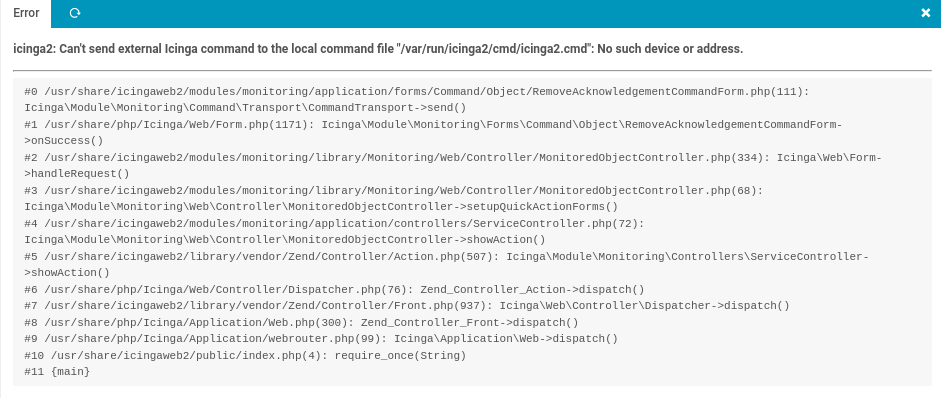
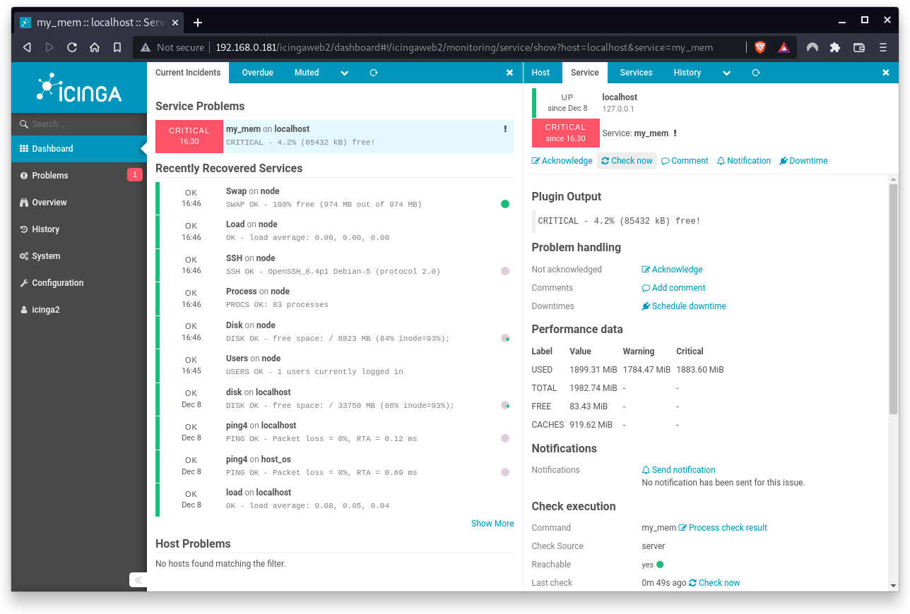
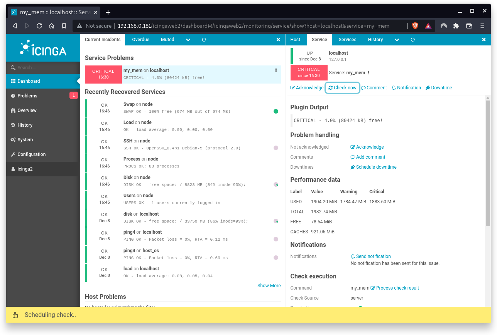
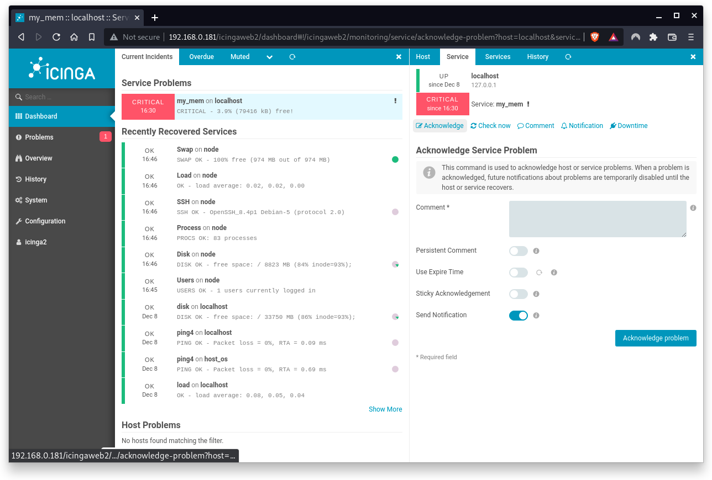
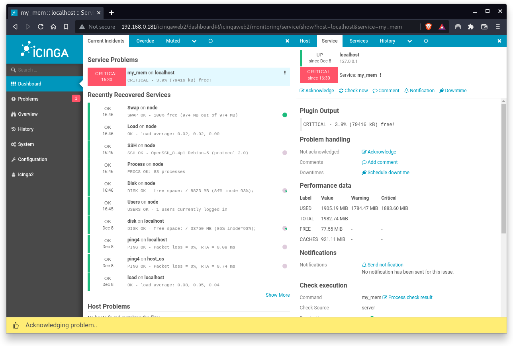
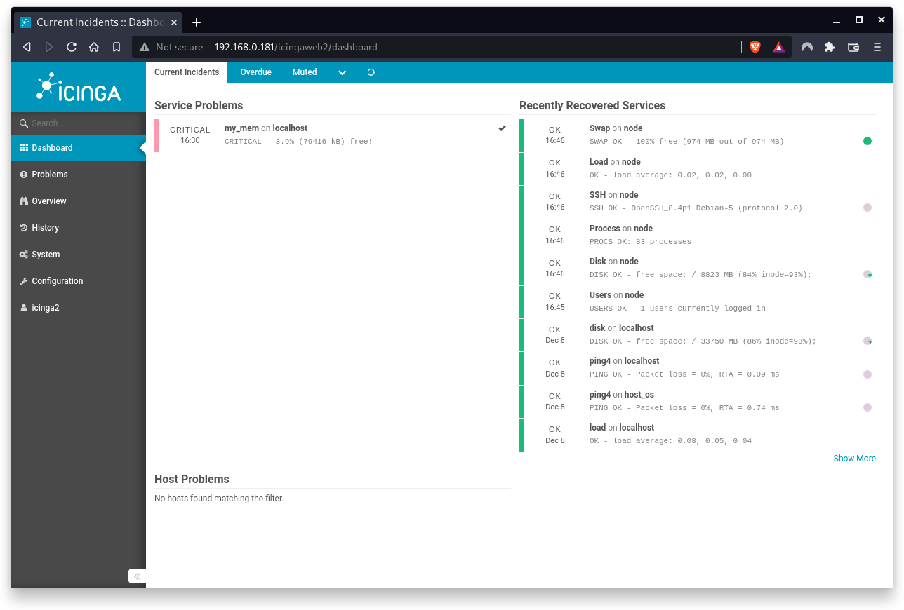

What You'll Learn
Hosts and services can be monitored in two ways:
- Use of Simple Host Monitoring (Agentless) This involves the use of services that are accessible across the local network or the Internet for example include HTTP, SSH, ICMP etc. This method is fit for monitoring hosts on which monitoring agents cannot be installed.
- Use of Monitoring Agents In this method, an agent is required in order to monitor host and services like CPU load, disk space, memory and the running process. In this configuration, Icinga 2 acts as the master node and the remote host acts as the client node.
In this codelab you will learn
- how to monitor the availability (=state) of remote hosts and services with Icinga2 agents.
Hosts and services can be anything such as Network services (HTTP, SSH, etc.), printers, switches or routers, or any other local or network-accessible services. Icinga2 monitors the states of hosts and the services they offer. Each host can have the states UP and DOWN, each service can have the states OKAY, WARNING, CRITICAL and UKNOWN.
Where You Can Look Up
The best source of documentation is the homepage of Icinga2. The latest documentation can be found here.
What You'll need
Icinga2 instances
In this codelab you will need two virtual machines:
- A working Icinga2 instance (called server) that you can access via IcingaWeb2 GUI. If you do not have a running Icinga2 instance, please consult the Codelab BITI IPM Lab - Icinga Installation how to install Icinga2 on your local computer.
- A working Debian instance (called node) where you will install Icinga2 Agent software for remote monitoring. Contact your instructor where to download it. Import the virtual machine by using the "Import Appliance" command of Virtual Box.
Both virtual machines run on Debian 11 but the specification of the node instance differs from the server instance. First, the node instance has no GUI, all commands have to be executed on the console. Second, the hardware is limited to 1 CPU core with 1 GB Ram to ensure that you HostOS (= your laptop) will not be overloaded.
Guest operation system (Guest OS)
This is the OS of the virtual machine. This will be Debian 11 (Bullseye).
Administators privileges
By default, administrator privileges are required on the Host OS to install additional software. Make sure that you have the required permissions.
For the Guest OS, you will create and manage your own users. These users will therefore be different from the Host's user administration.
Root privileges via sudo
In this codelab you have to work with root privileges. Therefore, a few words of caution: double check whatever you type and make backups whenever necessary.
Working with root privileges is quite easy. Open a terminal (a shell) and enter the following commmand:
sudo -s
Enter the password of the icinga user and voila:
root@server:/home/icinga#
Once you are root via sudo, it is no longer necessary to prepend the sudo command. Instead of sudo ls -lisa /root/ you can also type ls -lisa /root/ because you have root privileges already. However, all commands in this codelab will always start with sudo to remind you that you are working with root privileges.
Set up Icinga2 server node
After the introduction, it is time to set up Icinga2 for agentbased remote monitoring. We will start to set up the Icinga2 server as a master node.
Run the following command on your server to setup a Icinga2 master node:
sudo icinga2 node wizard
This will prompt you if this is a Satellite or Client setup. Choose your inputs to select a master setup or press Enter to accept the defaults:
Welcome to the Icinga 2 Setup Wizard!
We will guide you through all required configuration details.
Please specify if this is an agent/satellite setup ('n' installs a master setup) [Y/n]: n <<<--- ENTER THIS
Starting the Master setup routine...
Please specify the common name (CN) [server]: <<<--- PRESS ENTER
Reconfiguring Icinga...
Checking for existing certificates for common name 'server'...
Certificates not yet generated. Running 'api setup' now.
Generating master configuration for Icinga 2.
Enabling feature api. Make sure to restart Icinga 2 for these changes to take effect.
Master zone name [master]: <<<--- PRESS ENTER
Default global zones: global-templates director-global
Do you want to specify additional global zones? [y/N]: <<<--- PRESS ENTER
Please specify the API bind host/port (optional):
Bind Host []: <<<--- PRESS ENTER
Bind Port []: <<<--- PRESS ENTER
Do you want to disable the inclusion of the conf.d directory [Y/n]: n <<<--- ENTER THIS
Done.
Now restart your Icinga 2 daemon to finish the installation!
Once this setup is done, run the following command to restart the Icinga2 service. This will finalize the setup.
sudo systemctl restart icinga2
Set up the firewall on Icinga2 server node
If a firewall is running on your server node, you have to open the following port. This enables the communication between server and client nodes.
sudo ufw allow 5665
Generate a client ticket
A client (=Icinga2 satellite) which sends a Certificate Signing Request (CSR) must authenticate itself in a trusted way. The master generates a client ticket which is included in this request. That way the master can verify that the request matches the previously trusted ticket and sign the request.
Run the commands below on the master node to generate the ticket for your client node:
icinga2 pki ticket --cn 'node'
The command will output a ticket similar to the following:
3bcb8a06466706f6a5d5f541c175004149e6dbb2
In this codelab, we will assume the key above. Save your key as you will require it later while setting up the client nodes.
If a ticket is created without any errors, skip the next chapter, scroll down and continue with the chapter called Listen on port 5665.
Fix the salt problem
While generating the PKI ticket you may get the following error:
critical/cli: Ticket salt (--salt) must be specified
The first thing you have to do is to restart the Icinga2 service.
sudo systemctl restart icinga2
Next, you have to check if icinga2 has generated a so-called TicketSalt. This is a constant and stored in /etc/icinga2/constants.conf. You can check this with the following command:
sudo cat /etc/icinga2/constants.conf
The TicketSalt can be found in the last line of the output:
/**
* This file defines global constants which can be used in
* the other configuration files.
*/
/* The directory which contains the plugins from the Monitoring Plugins project. */
const PluginDir = "/usr/lib/nagios/plugins"
/* The directory which contains the Manubulon plugins.
* Check the documentation, chapter "SNMP Manubulon Plugin Check Commands", for details.
*/
const ManubulonPluginDir = "/usr/lib/nagios/plugins"
/* The directory which you use to store additional plugins which ITL provides user contributed command definitions for.
* Check the documentation, chapter "Plugins Contribution", for details.
*/
const PluginContribDir = "/usr/lib/nagios/plugins"
/* Our local instance name. By default this is the server's hostname as returned by `hostname --fqdn`.
* This should be the common name from the API certificate.
*/
const NodeName = "server"
/* Our local zone name. */
const ZoneName = "master"
/* Secret key for remote node tickets */
const TicketSalt = "aca0ab61458ee407a3e95da9cf9c90d3"
Now run the following command by using the TicketSalt as parameter:
icinga2 pki ticket --cn 'node' --salt 'aca0ab61458ee407a3e95da9cf9c90d3'
3bcb8a06466706f6a5d5f541c175004149e6dbb2
Now save this key as you will require it later while setting up the client nodes. However, if you get errors again, contact your instructor for help instead.
Listen on port 5665
Before you can set up the client nodes, Icinga 2 on the master node must be running and accepting connections on port 5665/tcp. Run the following command to check the status on port 5665/tcp:
ss -altnp | grep 5665
The output of the socket statistic command should look like this:
LISTEN 0 4096 0.0.0.0:5665 0.0.0.0:* users:(("icinga2",pid=18872,fd=14))
Typically, the process id (pid) and the file descriptor (fd) may differ from your output. However, if you can see this output then the Icinga2 server is up, running and listening on port 5665/tcp for incoming connection requests.
Installing Icinga2 on client node
Yes, you have to install Icinga2 on the client node. However, don't worry, the installation will be much shorter, I promise.
System update
The software repository on Icinga2 node might be outdated. Run the following commands on the node client to update your system package repositories.
sudo apt update
sudo apt upgrade
Icinga2 Core App
Now that Icinga 2 repos are in place, you can install it by running the command below:
sudo apt install icinga2
Durning the installation, the apt command will output the following information.
--- more ---
enabling default icinga2 features
Enabling feature checker. Make sure to restart Icinga 2 for these changes to take effect.
Enabling feature notification. Make sure to restart Icinga 2 for these changes to take effect.
Enabling feature mainlog. Make sure to restart Icinga 2 for these changes to take effect.
--- more ---
On Debian, Icinga2 is started and enabled upon installation. You can check this by running the command;
systemctl status icinga2
The output of the service status should look like the following:
● icinga2.service - Icinga host/service/network monitoring system
Loaded: loaded (/lib/systemd/system/icinga2.service; enabled; vendor preset: enabled)
Active: active (running) since Sat 2021-10-16 12:43:07 CET; 1min 6s ago
Docs: https://icinga.com/docs/icinga2/latest/
Process: 2846 ExecStartPre=/usr/lib/icinga2/prepare-dirs /usr/lib/icinga2/icinga2 (code=exited, status=0/SUCCESS)
Main PID: 2853 (icinga2)
Tasks: 13 (limit: 1133)
Memory: 12.5M
CPU: 1.069s
CGroup: /system.slice/icinga2.service
├─2853 /usr/lib/x86_64-linux-gnu/icinga2/sbin/icinga2 --no-stack-rlimit daemon -e
├─2867 /usr/lib/x86_64-linux-gnu/icinga2/sbin/icinga2 --no-stack-rlimit daemon -e
└─2870 /usr/lib/x86_64-linux-gnu/icinga2/sbin/icinga2 --no-stack-rlimit daemon -e
Oct 16 12:43:07 node icinga2[2867]: [2021-10-16 12:43:07 +0100] information/ConfigItem: Instantiated 235 CheckCommands.
Oct 16 12:43:07 node icinga2[2867]: [2021-10-16 12:43:07 +0100] information/ScriptGlobal: Dumping variables to file '/var/cache/icinga2/icinga2.vars'
Oct 16 12:43:07 node systemd[1]: Started Icinga host/service/network monitoring system.
Oct 16 12:43:07 node icinga2[2867]: [2021-10-16 12:43:07 +0100] information/ConfigItem: Triggering Start signal for config items
Oct 16 12:43:07 node icinga2[2867]: [2021-10-16 12:43:07 +0100] information/FileLogger: 'main-log' started.
Oct 16 12:43:07 node icinga2[2867]: [2021-10-16 12:43:07 +0100] information/NotificationComponent: 'notification' started.
Oct 16 12:43:07 node icinga2[2867]: [2021-10-16 12:43:07 +0100] information/CheckerComponent: 'checker' started.
Oct 16 12:43:07 node icinga2[2867]: [2021-10-16 12:43:07 +0100] information/ConfigItem: Activated all objects.
Oct 16 12:44:07 node icinga2[2867]: [2021-10-16 12:44:07 +0100] information/ConfigObjectUtility: Created and activated object 'node!load!6d89e9ea-7f13-41cb-b566-cd6899af5727' of type 'Downtime'.
Oct 16 12:44:07 node icinga2[2867]: [2021-10-16 12:44:07 +0100] information/Downtime: Added downtime 'node!load!6d89e9ea-7f13-41cb-b566-cd6899af5727' between '2021-10-17 02:00:00' and '2021-10-17 03:00:00', author: 'icingaadmin', fixed
Check if the status Active is in running mode which indicates that the service is up and running.
Monitoring Plugins
Icinga 2 requires additional monitoring plugins. Run the command below to install the plugins on the client node.
sudo apt install monitoring-plugins
Restart the service
On Debian, Icinga2 is started and enabled upon installation. However, after installing the monitoring-plugins it is always good to restart the Icinga2 service again and to check its status.
systemctl restart icinga2
systemctl status icinga2
Set up Icinga2 client node
In the last section, we set up the Icinga2 master node. In this section, we need to set up an Icinga2 agent which
- receives and accepts configurations and CheckCommands from the master node
- executes CheckCommands from the master node
- monitors the host where the agent is installed
- and which report the CheckCommand results back to the master node.
Run the following command on your client to setup the Icinga2 agent node:
sudo icinga2 node wizard
This will prompt you if this is a Satellite or Client setup. Choose Y to select an agent setup:
Welcome to the Icinga 2 Setup Wizard!
We will guide you through all required configuration details.
Please specify if this is an agent/satellite setup ('n' installs a master setup) [Y/n]: <<<--- PRESS ENTER
Starting the Agent/Satellite setup routine...
Please specify the common name (CN) [node]: <<<--- PRESS ENTER
Please specify the parent endpoint(s) (master or satellite) where this node should connect to:
Master/Satellite Common Name (CN from your master/satellite node): server <<<--- ENTER THIS
Do you want to establish a connection to the parent node from this node? [Y/n]: <<<--- PRESS ENTER
Please specify the master/satellite connection information:
Master/Satellite endpoint host (IP address or FQDN): 192.168.0.115 <<<--- ENTER THE IP OF YOUR ICINGA2 MASTER NODE
Master/Satellite endpoint port [5665]: <<<--- PRESS ENTER
Add more master/satellite endpoints? [y/N]: <<<--- PRESS ENTER
Parent certificate information:
Version: 3
Subject: CN = server
Issuer: CN = Icinga CA
Valid From: Dec 15 22:32:54 2021 GMT
Valid Until: Dec 11 22:32:54 2036 GMT
Serial: ee:e1:e8:f4:89:72:54:78:33:7e:44:fe:2a:49:f2:2a:21:02:71:b8
Signature Algorithm: sha256WithRSAEncryption
Subject Alt Names: server
Fingerprint: B6 53 F1 17 35 84 35 B3 B3 DE 36 82 4F F9 BC B5 13 75 50 44 E1 40 11 7C 3D F9 A1 78 7C 2A 03 48
Is this information correct? [y/N]: y <<<--- ENTER THIS
Please specify the request ticket generated on your Icinga 2 master (optional).
(Hint: # icinga2 pki ticket --cn 'node'): 3bcb8a06466706f6a5d5f541c175004149e6dbb2 <<<--- ENTER THIS AS DESCRIBED IN SECTION BEFORE
Please specify the API bind host/port (optional):
Bind Host []: <<<--- PRESS ENTER
Bind Port []: <<<--- PRESS ENTER
Accept config from parent node? [y/N]: y <<<--- ENTER THIS
Accept commands from parent node? [y/N]: y <<<--- ENTER THIS
Reconfiguring Icinga...
Disabling feature notification. Make sure to restart Icinga 2 for these changes to take effect.
Enabling feature api. Make sure to restart Icinga 2 for these changes to take effect.
Local zone name [node]: <<<--- PRESS ENTER
Parent zone name [master]: <<<--- PRESS ENTER
Default global zones: global-templates director-global
Do you want to specify additional global zones? [y/N]: <<<--- PRESS ENTER
Do you want to disable the inclusion of the conf.d directory [Y/n]: n <<<--- ENTER THIS
Done.
Now restart your Icinga 2 daemon to finish the installation!
The setup wizard fetches the parent node's certificate and ask you to verify that information. This is to prevent MITM attacks or any kind of untrusted parent relationship.
Once this setup is done, run the following command to restart and check the Icinga2 service. This will finalize the setup.
sudo systemctl restart icinga2
sudo systemctl status icinga2
Is Icinga2 up and running? Good, go ahead. If not, go back and run the setup again.
Set up the firewalls
If a firewall is running on your server and your node, you have to open the following port on both (!) virtual machines. This enables the communication between server and node.
sudo ufw allow 5665
sudo ufw reload
You can verify with the following command socket statistic (ss) that the master and the client node are now connected:
ss | grep 5665
The output of the socket statistic command should look like this:
tcp ESTAB 0 0 192.168.0.125:51928 192.168.0.115:5665
As shown, the agent running on the node (192.168.0.125) is connected (ESTAB) with the server (192.168.0.115). The node uses a so-called high port number (here 51928/tcp) while the server uses 5665/tcp.
If you run the socket statistic command on the server, you will get similar output, this time from the server's point of view.
Now that the master node and the client node are connected, it is time to configure the master so it can execute a remote check on the client node using the command endpoint.
First, login to master node and create a zone directory where you can add the configuration files for the host and service objects you want to monitor.
sudo mkdir /etc/icinga2/zones.d/master
Next, create and open the hosts configuration file with an editor of your choice (here nano).
sudo nano /etc/icinga2/zones.d/master/hosts.conf
Next, copy the following content in to the hosts.conf file:
// our node server
object Endpoint "node" {
}
object Zone "node" {
endpoints = [ "node" ]
parent = "master"
}
object Host "node" {
check_command = "hostalive" //check is executed on the master
address = "192.168.0.125" // replace this with the ip of your node
vars.client_endpoint = name //follows the convention that host name == endpoint name
}
Where,
- Endpoint objects are used to specify connection information for remote Icinga 2 instances.
- Zone objects are used to specify which Icinga 2 instances are located in a zone. A Zone object accepts Endpoints, parent and global as attributes. Endpoints represent endpoints in a zone, parent is the name of the parent zone (here master), and global as a boolean value indicates if configuration file should be synced to all endpoints or not. Default = false.
- Host objects represent hosts. Additionally, Icinga2 allows the definition of custom variables (vars) which can be used across all hosts and services (technically, Icinga2 inserts the variable's values in the http_header).
After saving the hosts.conf, create a services configuration file for the node with the following command (here nano):
sudo nano /etc/icinga2/zones.d/master/services.conf
Next, copy the following content in to the services.conf file:
// Check system disk usage
apply Service "Disk" {
check_command = "disk" // the check itself
command_endpoint = host.vars.client_endpoint // Check executed on client node
assign where host.vars.client_endpoint // apply to all endpoints which have the `client_endpoint` attribute specified
}
// Check system load
apply Service "Load" {
check_command = "load"
command_endpoint = host.vars.client_endpoint
assign where host.vars.client_endpoint
}
// Check number of running processes
apply Service "Process" {
check_command = "procs"
command_endpoint = host.vars.client_endpoint
assign where host.vars.client_endpoint
}
// Check the SSH Service
apply Service "SSH" {
check_command = "ssh"
command_endpoint = host.vars.client_endpoint
assign where host.vars.client_endpoint
}
// Check for SWAP memory usage
apply Service "Swap" {
check_command = "swap"
command_endpoint = host.vars.client_endpoint
assign where host.vars.client_endpoint
}
// Check number of logged in Users
apply Service "Users" {
check_command = "users"
command_endpoint = host.vars.client_endpoint
assign where host.vars.client_endpoint
}
Where,
- The apply keyword is used to create new objects
- Assign where represents a
Conditionwhich allows the use of expression operators such asEqual to (==),Less than (<)orNot Equal (!=)
Save the changes here. We will validate the configuration on the master node in the next section.
Okay, time to validate the configuration. Run the command:
sudo icinga2 daemon -C
Do you see errors? If yes, try to fix them. Otherwise, if not errors occur, restart and check the Icinga2 service with the following commands:
sudo systemctl restart icinga2
sudo systemctl status icinga2
Any errors? Try to fix them. Otherwise, go ahead.
If the restart of the icinga2 service was successful, open the Icinga2 Dashboard.

We will see our new checks (in Pending status) in the Icinga2 Dashboard in the Service Problems card.

More and more checks will move to the card Recently Recovered Services

Depending on the performance of the node client, Icinga2 will still report Host problems with your node server.

Finally, all checks should operate in normal state (except my_mem). No other services or host problems occur.
When clicking on a service problem and trying to check the service again, you will notice the following error:

To fix this error, we have to activate a feature named "command" on the Icinga2 master server. Run the following command:
sudo icinga2 feature enable command
Icinga2 will prompt you that the command feature has been enabled and that Icinga2 needs to be restarted.
sudo systemctl restart icinga2
Now go back to the Icinga2 Dashboard and reload the browser's page. Next, click on the Critical message (caused by my_mem) in the left pane. This opens a detail view in the right pane. Now click the Check now button.

A notification bar will appear indicating that the CheckCommand has been executed.

You can click the "Check now" button as many times as you want. You will notice changes of the Plugin Output (more or less free memory). Notification bars will pop up and disappear after a few seconds.
In addition, Icinga2 allows you to acknowledge a problem. When a problem is acknowledged, all future notifications about this problem are temporary disabled until the host or the service is recovered.
Click on the Acknowledge button and the Acknowledge section shows up 
Enter a meaningful text in the comment field. Leave the rest as default. Press the button Acknowledge problem.

A notification bar will appear indicating that the problem has been acknowledged.

The Service Problem is now marked with an OK icon. Note that the problem still exists but all future notifications are temporay disabled.

If you wish to enable future notifications (although the problem exists and you don't want to wait until it is fixed) you can always remove to acknowledgement manually.

Congratulations !
You have successfully set up your first remote host for agentbased monitoring.